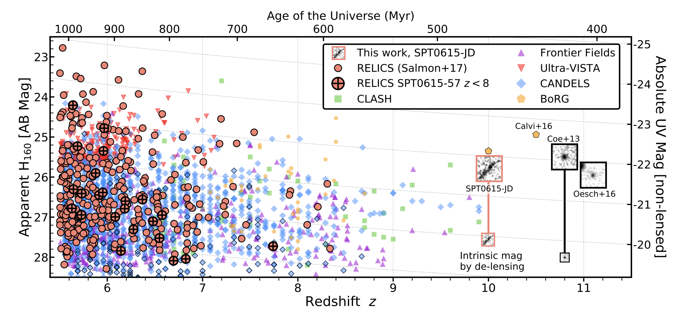
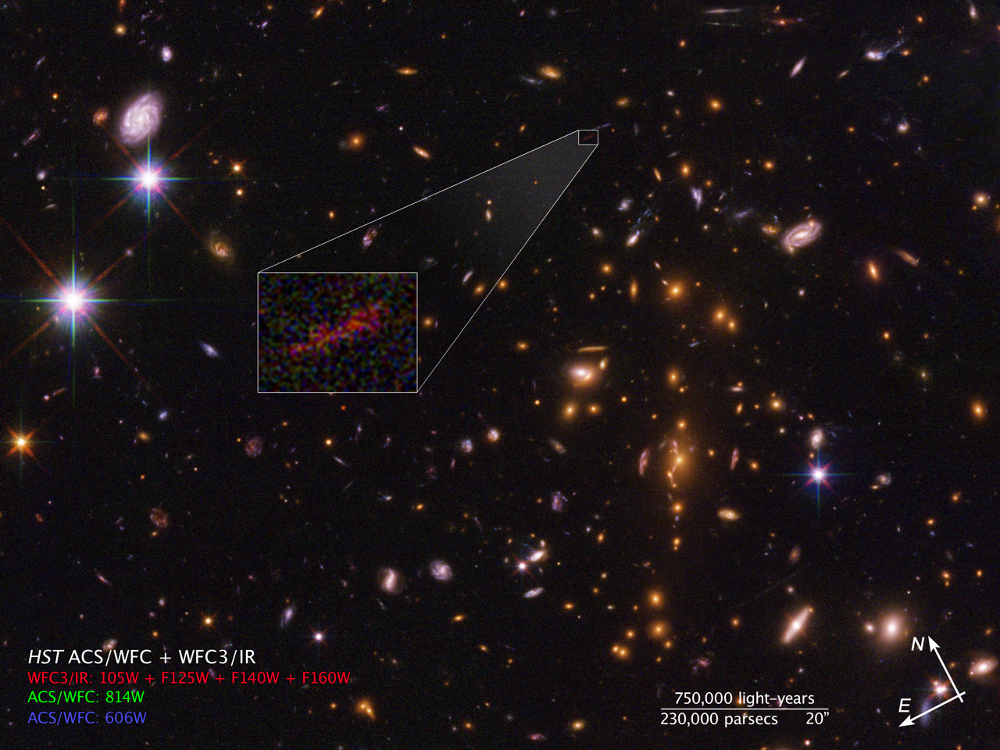
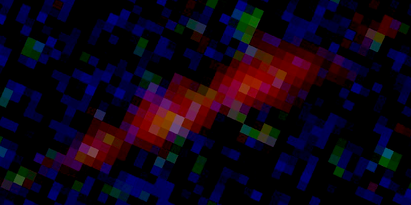
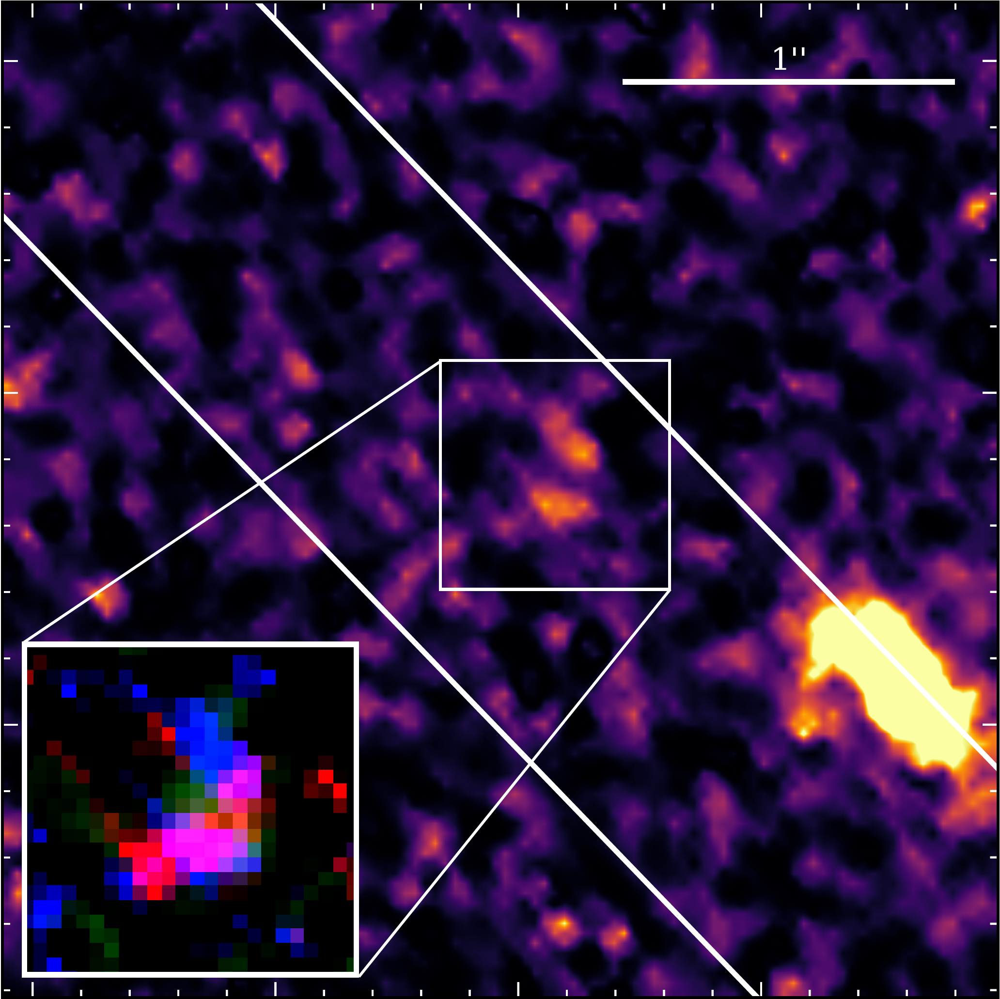
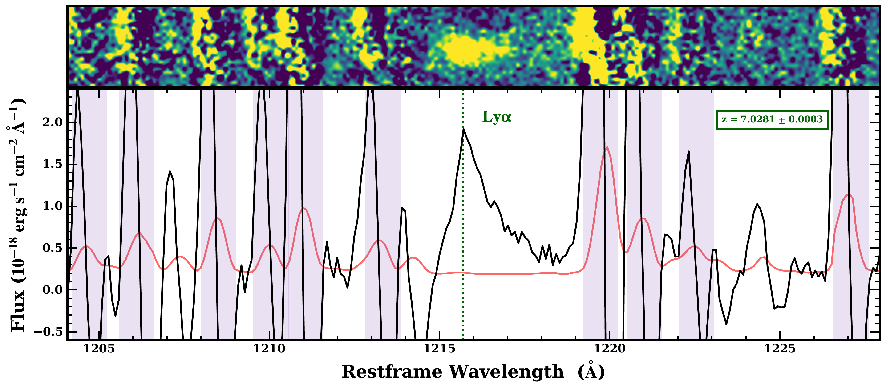
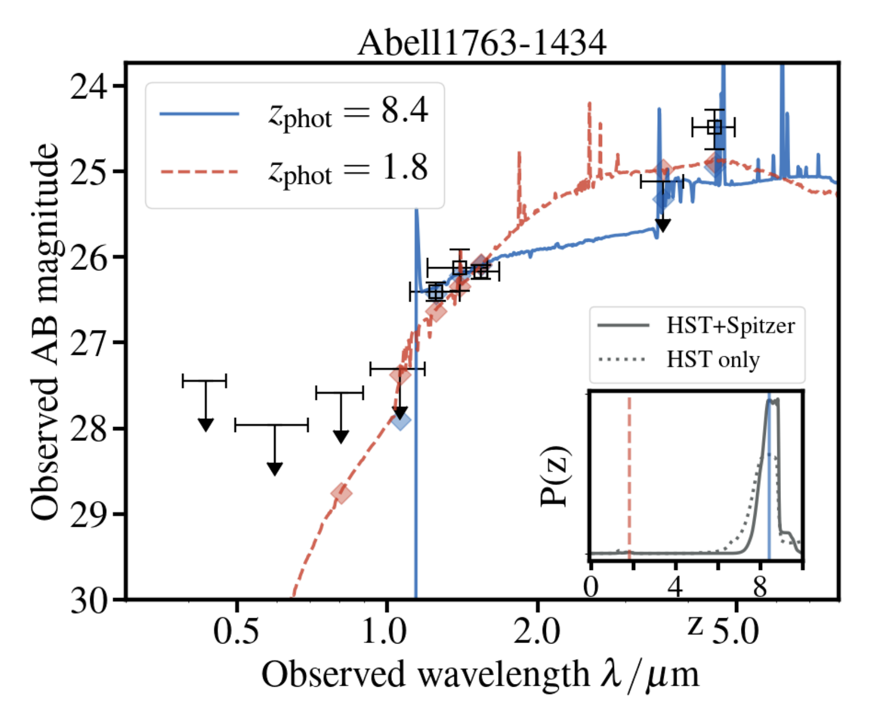
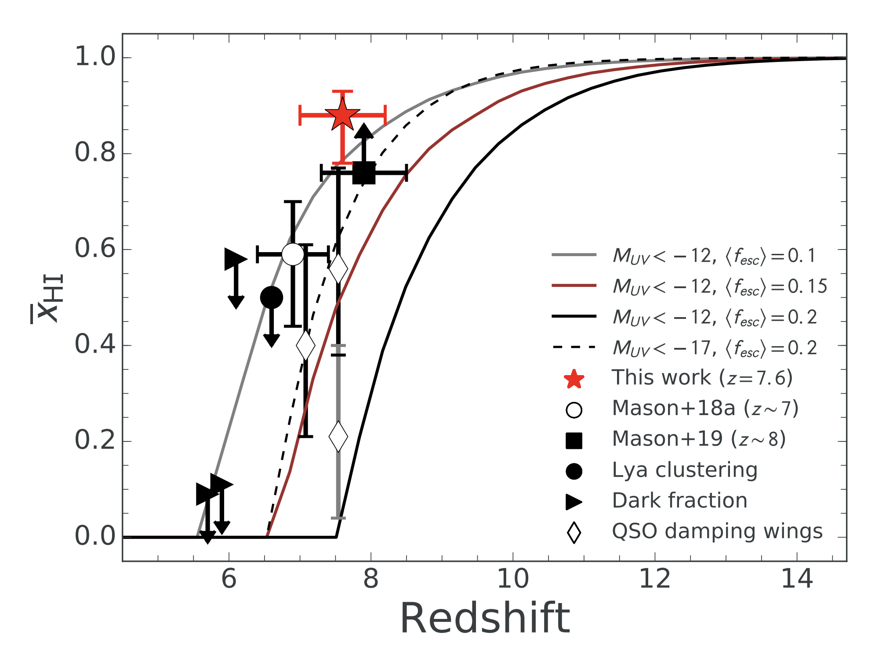

Research
I study galaxies in the first billion years after the Big Bang.
Characterizing Stellar Populations in cosmic dawn with RELICS
I am using HST and Spitzer/IRAC broadband imaging to study basic properties like age, stellar mass and star
formation rate of galaxies in the high redshift (z > 5.5) universe. As a member of the Reionization Lensing Cluster Survey
(RELICS) collaboration, my current goals are to measure stellar properties of the >300
HST-selected galaxies that comprise the high-redshift sample found
behind the 41 RELICS clusters. Focusing on the imaging from our 1000 hour Spitzer program, Spitzer-RELICS, I
have constrained the rest-frame optical fluxes of seven z~8-10
galaxies and am currently finalizing a similar analysis
for the rest of the sample, comprised of lower redshift (z~6-7) galaxies. Prime candidates for followup with
JWST, these sources are part of a sample that will help piece together a picture of the
epoch of reionization and early galaxy formation.

From Salmon et al., 2020.
SPT0615-JD
The highest redshift galaxy in our sample is SPT0615-JD, a spatially extended arc at z~10. While this galaxy
has a bright neighboring galaxy, we were able to deblend Spitzer/IRAC fluxes enough to place a constraint on the rest-frame
optical part of the galaxy's spectrum. We recently recieved new HST data, revealing more detail in the arc, and further
stregthening the redshift solution. Find details in Salmon et al., 2018, and Strait et al., 2020.


From this news release.
Dichromatic Primeval Galaxy at z~7
The most recent discovery to come out of the RELICS high-z sample is a two-component galaxy, detected strongly with
Lyman-α at z=7.03. The rest-frame equivalent width, which we measured to be between 200-400 Angstroms is extreme, even
for a young galaxy experiencing rapid star formation. But this galaxy presented us with a puzzle: we see two components in HST-- a blue, likely young component, and a redder,
likely older, dustier, more established component. While we don't have the data to distguish between the scenarios this galaxy may be experiencing, such as a major merger or accretion,
we believe it is one of those two causing a massive rejuvination in this galaxy. Keck, ALMA, and JWST detections will all be illuminating
for this galaxy. Look out for a draft on ArXiv with details soon!


Pelliccia et al., in preparation
Old Stellar Populations
We have found a few examples of galaxy candidates in RELICS that seemingly prefer a nearly maximally old solution for
formation age. The most convincing and exciting example is Abell1763-1434, which has a best-fit redshift of z~8.4, and
shows a bright detection in Spitzer/IRAC Channel 2, inferring that there is a Balmer/4000A break. This galaxy shows evidence of
star formation as early as <100Myr after the Big Bang.

From Strait et al., 2020.
Strong Nebular Emitters
In addition to nearly maximally old galaxies, we have found several examples of galaxies which are bright in Spitzer/IRAC Channel 1 and are at z~6.6-7.0. This is evidence of strong nebular emission from the H-β and [OIII] λλ 4905,5007 transitions. Look out for details in a new paper on ArXiv soon!
Cosmic Telescopes and Magnification
Before my work with RELICS, I focused on lens modeling galaxy clusters, starting with the Hubble Fronier Field cluster,
Abell370. I used multiply imaged galaxy systems to constrain the mass and magnification
profile of the cluster, and provided
my model to the public. My model and many others are available on MAST for public use.

From Strait et al., 2018
Timeline of Reionziation
I observe with my group at UC Davis for our Keck program, RELICS of the Cosmic Dawn. We use MOSFIRE, DEIMOS and LRIS to
search for Lyman-α emitters. With observations of 5 < z < 7 and then 7 < z < 8.2 galaxies from our previous program, we were able to
place constraints on the Lyman-α emitter fraction and volume-averaged neutral hydrogen fraction (respectively) of the universe at those epochs.

From 7Hoag et al., 2019